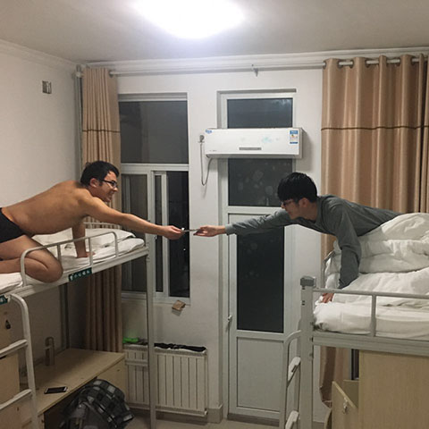

<!DOCTYPE html>
<html>
<head>
	<meta charset="UTF-8">
	<!-- <meta name="viewport" content="width=device-width, initial-scale=1.0,maximum-scale=1.0, minimum-scale=1.0, user-scalable=no" /> -->
	<title>国网泰安第四期非电9班培训-画廊</title>
	<link rel="stylesheet" type="text/css" href="css/normalize.css">
	<style type="text/css">
		/*2 舞台区样式*/
		html,body{
			width: 100%;
			height: 100%;
			background-color: #222
		}
		.stage{
			width: 100%;
			height: 100%;
			position: relative;
		}
		.img-sec{
			width: 100%;
			height: 100%;
			position: relative;
			overflow: hidden;
			background-color: #ddd;

			/*10.3 优化旋转的3D效果
			 *Tip 当为元素定义perspective属性时，其子元素会获得透视效果，而不是元素本身。
			 */
			perspective:1800px;
			-webkit-perspective:1800px;
			-o-perspective:1800px;
			-moz-perspective:1800px;
			-ms-perspective:1800px;
		}
		.controller-nav{
			width: 100%;
			position: absolute;
			left: 0;
			bottom: 30px;
			z-index: 101;
			text-align: center;
		}

		/*3 图片区样式*/
		.img-figure{
			width: 320px;
			height: 360px;
			margin: 0;
			padding: 40px;
			box-sizing: border-box;
			background-color: #fff;

			position: absolute;
		}
		.img-figure figcaption{
			text-align: center;
		}
		.img-figure figcaption .img-title{
			margin: 20px 0 0 0;
			font-size: 16px;
			color: #a7a0a2;
		}

		/*8.1 翻转效果样式*/
		.img-figure{
			/*8.1.2 子元素（.img-back）将保留其3D位置*/
			/*11.5 preserve-3d在IE下无效*/
			transform-style: preserve-3d;
			-webkit-transform-style: preserve-3d;
			-o-transform-style: preserve-3d;
			-moz-transform-style: preserve-3d;
			-ms-transform-style: preserve-3d;

			cursor: pointer;

			/*10.1 动画的过渡属性*/
			transition:left .6s ease-in-out,top .6s ease-in-out,transform .6s ease-in-out;
			/*11.2 Safari不仅要设置-webkit-transition，还要设置-webkit-transform*/
			-webkit-transition:left .6s ease-in-out,top .6s ease-in-out,-webkit-transform .6s ease-in-out;
			-o-transition:left .6s ease-in-out,top .6s ease-in-out,transform .6s ease-in-out;
			-moz-transition:left .6s ease-in-out,top .6s ease-in-out,transform .6s ease-in-out;
			-ms-transition:left .6s ease-in-out,top .6s ease-in-out,transform .6s ease-in-out;

			/*10.4 添加更立体的“倒”的效果=>改旋转原点+反面时平移“回去”
			 *transform-origin设置旋转元素的基点位置，默认50% 50% *0，即元素的平面中心点，x=0时以y轴为轴（逆时针旋转）
			 */
			transform-origin: 0 50% 0;
			-webkit-transform-origin: 0 50% 0;
			-o-transform-origin: 0 50% 0;
			-moz-transform-origin: 0 50% 0;
			-ms-transform-origin: 0 50% 0;
		}
		.img-figure.is-inverse{
			/*10.4.1 
			 *transform的translate、rotate等值的顺序会影响变形的效果
			 *transform: translate(320px) rotateY(180deg);与
			 *transform: rotateY(180deg) translate(-320px);相同
			 */
			transform: translate(320px) rotateY(180deg);
			-webkit-transform: translate(320px) rotateY(180deg);
			-o-transform: translate(320px) rotateY(180deg);
			-moz-transform: translate(320px) rotateY(180deg);
			-ms-transform: translate(320px) rotateY(180deg);
		}
		.img-figure figcaption .img-back{
			position: absolute;
			top: 0;
			left: 0;

			width: 100%;
			height: 100%;
			box-sizing: border-box;
			overflow: auto;
			padding: 50px 40px;

			color: #a7a0a2;
            font-size: 22px;
            line-height: 1.25;
            text-align: left;
            background-color: #fff;
            
			/*8.1.1 "背面描述"的效果：沿着Y轴（竖轴）旋转180deg（将来父元素再旋转180deg变为正面） 并使用backface-visibility: hidden;隐藏后面元素*/
			/*11.3 IE和Safari背面内容被转了180deg的正面内容挡住的情况，可以translateZ(1px)解决*/
            transform: rotateY(180deg) translateZ(1px);
            -webkit-transform: rotateY(180deg) translateZ(1px);
			-o-transform: rotateY(180deg) translateZ(1px);
			-moz-transform: rotateY(180deg) translateZ(1px);
			-ms-transform: rotateY(180deg) translateZ(1px);

            backface-visibility: hidden;
            -webkit-backface-visibility:hidden;
            -o-backface-visibility:hidden;
			-moz-backface-visibility:hidden; 
			-ms-backface-visibility:hidden;
		}
		/*10 动画效果*/
	</style>
</head>
<body>
	<!-- 2 构建内容区（舞台） -->
	<section class="stage" id="stage">
		<section class="img-sec" id="img-sec">
			<!-- 3 构建图片区 -->
			<!--  
			<figure class="img-figure">
				
				<figcaption>
					<h2 class="img-title">第一张图片</h2>
					<div class="img-back">
						<p>第一张图片的描述</p>
					</div>
				</figcaption>
			</figure> 
			 -->
		</section>
		<nav class="controller-nav">
			
		</nav>
	</section>

	<!-- 1 构建imageDatas -->
	<script type="text/javascript" src="data/imageDatas.js"></script>
	<script type="text/javascript">
		/*4 载入图片
		 * 自执行函数
		 * @param imageDatas
   		 * @return figuresArr数组和动态构建的img-figure的html结构
		 */
		var figuresArr=(function loadImg(imageDatas) {

			var figuresArr=[],
				imgSec=document.getElementById('img-sec');

			imageDatas.forEach(function(imgData){

				var figureEle=document.createElement('figure');
				figureEle.className="img-figure";

				var imgEle=document.createElement('img');
				imgEle.src="images/"+imgData.fileName;
				imgEle.title=imgData.title;
				imgEle.width=240;
				imgEle.height=240;

				var figCapEle=document.createElement('figcaption');
				var h2Ele=document.createElement('h2');
				h2Ele.className="img-title";
				h2Ele.innerText=imgData.title;

				var divEle=document.createElement('div');
				divEle.className="img-back";

				var pEle=document.createElement('p');
				if(imgData.desc.indexOf('<br>')!=-1){
					imgData.desc.split('<br>').forEach(function(value){
						pEle.innerHTML+=(value+'<br>');
					});
				}else{
					pEle.innerHTML=imgData.desc;
				}

				divEle.appendChild(pEle);
				figCapEle.appendChild(h2Ele);
				figCapEle.appendChild(divEle);
				figureEle.appendChild(imgEle);
				figureEle.appendChild(figCapEle);
				imgSec.appendChild(figureEle);

				figuresArr.push(figureEle);
			});

			// 10.2 图片载入时给一个初始的布局位置left:0,top:0
			figuresArr.forEach(function(value){
				/*11.1 给style以字符串的方式赋值，IE和Safari无效
				 *value.style='left:0;top:0';*/
				value.style.left='0';
				value.style.top='0';
			});

			return figuresArr;

		})(imageDatas);

		/*5 图片（figure）定位
		 *	分为三类：居中的1个、上部的0或1个、左右的剩余各一半
		 */
		// 5.1 定位的可取值范围“参考”
		var constant={
			centerPos:{// 居中的 
				left:0,
				top:0
			},
			vPosRange:{// 上部的
				x:[0,0],
				topY:[0,0]
			},
			hPosRange:{// 左右的
				leftSecX: [0, 0],
		        rightSecX: [0, 0],
		        y: [0, 0]
			}
		}
		
		// 5.2 赋值真正的取值范围
		// 5.2.1 获得stage和imgFigure的宽和高
		var stageDom=document.getElementById("stage"),
			stageW=stageDom.scrollWidth,
			stageH=stageDom.scrollHeight,
			halfStageW=stageW/2,
			halfStageH=stageH/2,

			imgFigureDom=figuresArr[0],
			imgFigureW=imgFigureDom.scrollWidth,
			imgFigureH=imgFigureDom.scrollHeight,
			halfimgFigureW=imgFigureW/2,
			halfimgFigureH=imgFigureH/2;

		// 5.2.2 计算可取值
		constant.centerPos.left=halfStageW-halfimgFigureW;
		constant.centerPos.top=halfStageH-halfimgFigureH;

		constant.vPosRange.x[0]=halfStageW-imgFigureW;
		constant.vPosRange.x[1]=halfStageW;
		constant.vPosRange.topY[0]=-halfimgFigureH;
		constant.vPosRange.topY[1]=halfStageH-halfimgFigureH*3

		constant.hPosRange.leftSecX[0]=-halfimgFigureW;
		constant.hPosRange.leftSecX[1]=halfStageW-halfimgFigureW*3;
		constant.hPosRange.rightSecX[0]=halfStageW+halfimgFigureW
		constant.hPosRange.rightSecX[1]=stageW-halfimgFigureW;
		constant.hPosRange.y[0]=-halfimgFigureH;
		constant.hPosRange.y[1]=stageH-halfimgFigureH;
		
		/* 5.3 布局所有图片（figure）的函数
		 * 需先执行一遍
		 * @param index,figuresArr
		 */
		function rearrange(centerIndex){
			// 全局变量figuresArr和constant
			
			// “取出0张”居中图片
			var figuresCenterArr=figuresArr.splice(centerIndex,1),
				centerLeft=constant.centerPos.left,
				centerTop=constant.centerPos.top;
				// centerRotate=0; 8.1.3 .img-figure要rotateY(180deg)所以这里不能rotate(0deg)

			// 9 设置图片的z-index值，使居中图片“领先”与其余图片。
	    	/*Tip：z-index和transform用于改变元素的堆叠顺序，同时使用会让z-index失效*/
			figuresCenterArr[0].style.left=centerLeft+'px';
			figuresCenterArr[0].style.top=centerTop+'px';
			figuresCenterArr[0].style.zIndex=11;
			figuresCenterArr[0].style.transform='';
			figuresCenterArr[0].style.WebkitTransform='';
			
			/* 如下三种情况，行内样式赋值给一个对象（x）;赋值给字符串（x IE/Safari不能正确赋值）；依次给属性赋值（√）。
			 * figuresCenterArr[0].style={
			 * 	left:centerLeft+'px',
			 * 	top:centerTop+'px'
			 * };
			 *
			 * figuresCenterArr[0].style='left:'+centerLeft+'px;top:'+centerTop+'px';
			 *
			 * figuresCenterArr[0].style.left=centerLeft+'px';
			 * figuresCenterArr[0].style.top=centerTop+'px';
			 */

			// “取出0到1张”上部图片
			var topFigureNum=Math.floor(Math.random()*2),// 取一个或者不取
				topFigureIndex=Math.ceil(Math.random()*(figuresArr.length-topFigureNum)),
				figuresTopArr=figuresArr.splice(topFigureIndex,topFigureNum);

			figuresTopArr.forEach(function(value,index){
				var topLeft=getRangeRandom(constant.vPosRange.x[0],constant.vPosRange.x[1]),
					topTop=getRangeRandom(constant.vPosRange.topY[0],constant.vPosRange.topY[1]),
					topRotate=get30DegRandom();

				figuresTopArr[index].style.left=topLeft+'px';
				figuresTopArr[index].style.top=topTop+'px';
				figuresTopArr[index].style.zIndex=''
				figuresTopArr[index].style.transform='rotate('+topRotate+'deg)';
				figuresTopArr[index].style.WebkitTransform='rotate('+topRotate+'deg)';
				/*11.4 js脚本设置transform:rotate()需要针对Safari浏览器添加前缀 */

				/*浏览器兼容性前缀
				['MozTransform','msTransform','WebkitTransform'].forEach(function(profix){
					figuresTopArr[index].style+=(profix+':rotate('+topRotate+'deg)');
				});*/
			});

			// 左右两侧图片
			for(var i=0,j=figuresArr.length,k=j/2;i<j;i++){
				var asideLeft=0,
					asideTop=getRangeRandom(constant.hPosRange.y[0],constant.hPosRange.y[1]);
				if(i<k){
					asideLeft=getRangeRandom(constant.hPosRange.leftSecX[0],constant.hPosRange.leftSecX[1]);
				}else{
					asideLeft=getRangeRandom(constant.hPosRange.rightSecX[0],constant.hPosRange.rightSecX[1]);
				}
				asideRotate=get30DegRandom();

				figuresArr[i].style.left=asideLeft+'px';
				figuresArr[i].style.top=asideTop+'px';
				figuresArr[i].style.zIndex='';
				figuresArr[i].style.transform='rotate('+asideRotate+'deg)';
				figuresArr[i].style.WebkitTransform='rotate('+asideRotate+'deg)';
			}

			// “合并”所有图片
			if(figuresTopArr[0]){
				figuresArr.splice(topFigureIndex,0,figuresTopArr[0]);
			}
			figuresArr.splice(centerIndex,0,figuresCenterArr[0]);
		}
		rearrange(0);

		// 6 获取区间内的一个随机值
		function getRangeRandom(low,high){
			return Math.floor(Math.random()*(high-low)+low)
		}

		/* 7 图片旋转
		 * 获取 0~30° 之间的一个任意正负值
		 */
		function get30DegRandom(){
			return (Math.random()>0.5?'':'-')+Math.floor(Math.random()*30);
		}

		/* 8 点击图片 使其居中或翻转
		 * （居中状态：isCenter）
		 * （翻转状态：isInverse 翻转样式：is-inverse）
	     *  状态的管理 +_+ 有点晕
	     */

	    // 8.2.1 绑定clickHandler函数与初始化isCenter和isInverse状态
	    figuresArr.forEach(function(value,index){
	    	if(index==0){
	    		value.setAttribute('iscenter','true');
	    		/*设置非标准html属性使用setAttribute()方法，
	    		 *且key应为小写（大写会自动转换为小写）。
	    		 */
	    	}else{
	    		value.setAttribute('iscenter','false');
	    	}
	    	value.setAttribute('isinverse','false');

	    	value.addEventListener("click",imgClickHandler,'false');
	    });

	    // 8.2.2 
	     function imgClickHandler(e){
	     	/*事件处理函数的默认参数是event，所以绑定事件监听时不能传入参数，如index，
	     	 *index可以由array.indexOf(ele)获取
	     	 */

	    	var index=figuresArr.indexOf(this);

	    	// 如果居中-->翻转
	    	if(this.getAttribute('iscenter')=='true'){
	    	/*setAttribute('iscenter',true);
	    	 *getAttribute('iscenter')=='true'
	    	 */
	    		inverse(index);
	    	}else{
	    	//如果不居中-->居中
	    		center(index);
	    	}
	    	e.preventDefault();
	    	e.stopPropagation();
	    }

	    // 居中函数
	    function center(centerIndex){
	    	/* 先设置“所有”都不居中，再单独设置“指定的”居中，因为“原来”居中状态的元素较难找到。
	    	 */
	    	figuresArr.forEach(function(value,index){
	    		if(index==centerIndex){
	    			value.setAttribute('iscenter','true');
	    		}else{
	    			value.setAttribute('iscenter','false');
	    		}
	    		// 居中时重置所有的isinverse状态为false和删除is-inverse样式。
	    		value.setAttribute('isinverse','false');
	    		value.className='img-figure';
	    	});
	    	rearrange(centerIndex);
	    };

	    // 翻转函数
	    function inverse(index){
	    	var imgFigureClassName='img-figure';

	    	// isinverse==false表示正面
	    	if(figuresArr[index].getAttribute('isinverse')=='false'){
	    		figuresArr[index].className=imgFigureClassName+" is-inverse";
	    		figuresArr[index].setAttribute('isinverse','true');
	    	}else{
	    		figuresArr[index].className=imgFigureClassName;
	    		figuresArr[index].setAttribute('isinverse','false');
	    	}
	    	/*html非标准属性不能以.或[]的方式获取
	    	 *figuresArr[index].isinverse=!figuresArr[index].isinverse
	    	 */
	    }
	</script>
</body>
</html>